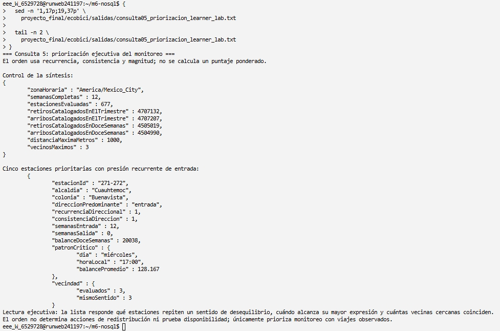
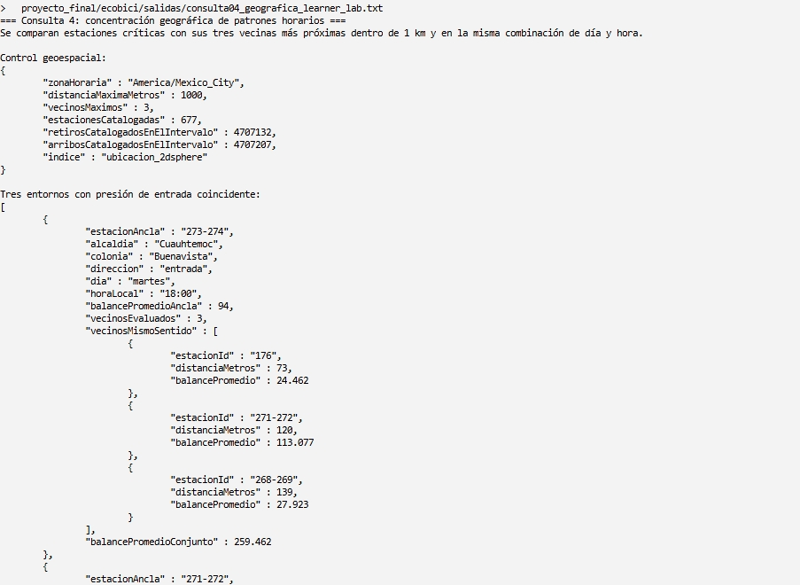
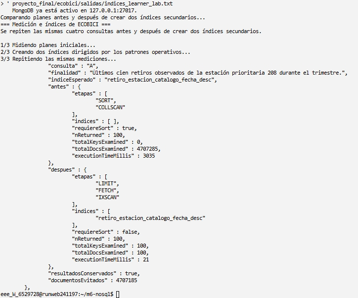
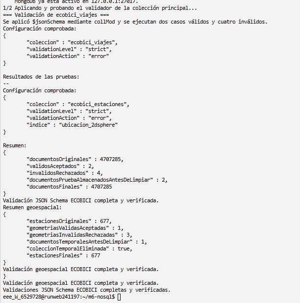
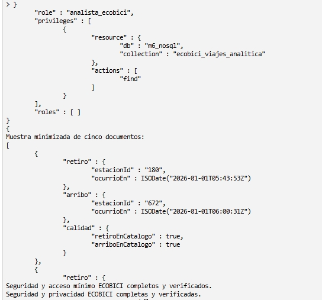

Proyecto final · MongoDB
Identificación de cicloestaciones, periodos y entornos cercanos que requieren mayor prioridad de monitoreo operativo.
Integrante
Fernando Ugalde Ubaldo
Periodo analizado
Enero–marzo de 2026
Entorno
AWS Academy Learner Lab · MongoDB 4.4.29
Conceptos avanzados de bases de datos NoSQL · 25 de agosto de 2026
Problema y datos
Los viajes no regresan necesariamente a su estación de origen. Por ello, una estación puede acumular más retiros que arribos —o lo contrario— en ciertos periodos. El proyecto mide ese desequilibrio de flujo observado para priorizar dónde y cuándo revisar la operación.
Se utilizaron tres CSV mensuales de viajes publicados por ECOBICI y el catálogo público de cicloestaciones del Portal de Datos Abiertos de la Ciudad de México. Los cuatro archivos se comprobaron mediante conteos y SHA-256 y no se versionaron en Git.
retiro y arribo son subdocumentos del viaje porque cada uno necesita conservar juntos estación y momento, y ninguno tiene significado independiente de ese viaje.estacionId coincide con el _id del catálogo. MongoDB no impone una llave foránea: el cargador comprueba la existencia y guarda retiroEnCatalogo y arriboEnCatalogo.El diseño evita repetir calle, colonia, alcaldía y coordenadas en los dos extremos de 4 707 285 viajes: aproximadamente 9.4 millones de apariciones potenciales. Esos atributos se almacenan una sola vez por estación. Los identificadores se conservan como cadenas para no perder ceros iniciales ni códigos compuestos; género, edad e identificador de bicicleta se excluyeron porque no responden las preguntas.
Fuentes: Datos abiertos de ECOBICI y Cicloestaciones ECOBICI · Datos Abiertos CDMX.
Implementación y calidad
01/01/202600:06:57{"$date":
"2026-01-01T06:06:57Z"}Z indica UTC.mongoimport crea un BSON Date; $dateToString con America/Mexico_City recupera las 00:06:57.Por qué no se guardó como texto. JSON ordinario no posee un tipo fecha; $date es la representación Extended JSON que permite a mongoimport crear el tipo BSON nativo. Así MongoDB puede ordenar, filtrar intervalos, restar retiro y arribo, validar el tipo e interpretar hora, día y semana en una zona explícita. En el ejemplo, el arribo ocurrió a las 00:11:21 locales y la diferencia almacenada y verificada fue de 264 segundos.
1000: conservar sin inventar1000 → otra1000 → 1000otra → 1000El código 1000 aparece en los CSV de viajes, pero no entre las 677 estaciones de la instantánea geográfica. No se declara inválido ni se crea una estación ficticia: se conserva el identificador original y se marca retiroEnCatalogo: false o arriboEnCatalogo: false. El extremo sin ubicación no entra en rankings geográficos; el otro extremo sí participa cuando su identificador existe en el catálogo.
MongoDB reduce primero los 4.7 millones de viajes; JavaScript combina únicamente los resúmenes de retiros y arribos por estación, periodo o fecha.
Decisión. Se usan dos pipelines espejo porque cada viaje aporta un retiro y un arribo que pueden pertenecer a estaciones distintas. Después se unen sus conteos y se calcula arribos − retiros.
Permitió observar. Cinco presiones de entrada y cinco de salida, además del control global de un retiro y un arribo por viaje.
Curso: agrupación con $group/$sum y orden reproducible del Reto 06.
Decisión. $match fija catálogo e intervalo; $dateToString deriva día y hora en America/Mexico_City; $group usa la unidad estación-día-hora.
Permitió observar. Horas de mayor y menor actividad en laborables y fines de semana y el momento crítico de cada estación.
Curso: derivar el periodo antes de agrupar, como en el Reto 08.
Decisión. Se resume por estación y fecha local; después se completan doce semanas fijas y se separan semanas de entrada, salida y neutras.
Permitió observar. Recurrencia sobre doce semanas, consistencia sólo entre semanas no neutras y cambios consecutivos de dirección.
Curso: periodos del Reto 08 y variaciones consecutivas del Ejemplo 16.

Análisis especializado
Las últimas consultas no sustituyen los resúmenes anteriores: relacionan el patrón temporal con la ubicación y producen una salida única de monitoreo.
Decisión. Primero se calcula el balance estación-día-hora. Para cinco anclas por dirección, $geoNear recupera las tres estaciones más próximas dentro de 1 km; una vecina coincide sólo si presenta el mismo signo en el mismo día y hora.
Permitió observar. Entornos donde la presión no aparece aislada. En 273-274, martes 18:00, tres vecinas a 73, 120 y 139 m compartieron presión de entrada.
Curso: transformación e índice 2dsphere del Reto 05 y proximidad del Ejemplo 11.
Decisión. La consulta es autocontenida: vuelve a resumir retiros y arribos sin depender de colecciones intermedias. Ordena por criterios observables y no usa una puntuación con pesos inventados.
Permitió observar. Cinco prioridades por dirección con estación, repetición semanal, patrón crítico y cantidad de vecinas coincidentes en una salida compacta.
Curso: reutiliza el pipeline temporal del Reto 08 y la proximidad del Ejemplo 11; no introduce una técnica ajena al módulo.

ubicacion_2dsphere. El entorno anclado en 273-274, Buenavista, presentó presión de entrada el martes a las 18:00; sus tres vecinas a 73, 120 y 139 metros compartieron el sentido y el balance promedio conjunto fue +259.462. Esto demuestra una concentración territorial del patrón observado.Alcance de la decisión. La vecindad se calcula después del orden por recurrencia, consistencia y magnitud: informa el contexto, pero no recibe un peso arbitrario. Los resultados describen viajes observados, no disponibilidad. La búsqueda textual se descartó porque no existen campos de lenguaje libre relevantes.
Índices y validación
Se ejecutaron las mismas cuatro consultas con explain("executionStats") antes y después de crear dos índices secundarios; después se aplicaron validadores $jsonSchema con nivel strict y acción error.
retiro.estacionId: 1 → calidad.retiroEnCatalogo: 1 → retiro.ocurrioEn: −1Las dos igualdades forman primero el bloque de una estación catalogada; la fecha descendente atiende el intervalo y entrega los eventos recientes sin SORT separado.arribo.estacionId: 1 → calidad.arriboEnCatalogo: 1 → arribo.ocurrioEn: −1Se requiere otro índice porque retiro.* y arribo.* son rutas diferentes. Mantiene el mismo orden de igualdad, igualdad y fecha descendente.| Consulta y patrón | Plan anterior | Plan posterior | Documentos examinados | Decisión |
|---|---|---|---|---|
| A · últimos 100 retiros de 208 | COLLSCAN + SORT | IXSCAN + FETCH, sin SORT | 4 707 285 → 100 | Sí mejoró. Atiende igualdad, catálogo, intervalo y orden. |
| B · todos los retiros de 208 | COLLSCAN | IXSCAN + FETCH | 4 707 285 → 29 697 | Sí mejoró. Reutiliza el prefijo retiro.estacionId. |
| C · últimos 100 arribos de 271-272 | COLLSCAN + SORT | IXSCAN + FETCH, sin SORT | 4 707 285 → 100 | Sí mejoró. Usa el índice equivalente de arribos. |
| D · retiros catalogados del trimestre | COLLSCAN | COLLSCAN | 4 707 285 → 4 707 285 | No mejoró. Omite el primer campo y devuelve casi toda la colección. |
Patrón del curso. La medición reproduce el Reto 03 y los Ejemplos 05–06: conservar la consulta, comparar antes/después, colocar igualdades antes del campo de ordenamiento, comprobar el prefijo y reconocer que un índice no beneficia cualquier filtro.

COLLSCAN + SORT, con 4 707 285 documentos examinados, a IXSCAN sin ordenamiento independiente y sólo 100 documentos examinados. Conservó 100 resultados y evitó examinar 4 707 185 documentos. El tiempo es evidencia secundaria porque puede variar.
Costos y límites. Los índices ocupan almacenamiento y aumentan el trabajo de escritura. No sustituyen los recorridos completos requeridos por los balances globales. El índice ubicacion_2dsphere tiene otra finalidad: es requisito funcional de $geoNear, no parte de esta comparación. Los tiempos variaron, por lo que la evidencia principal son las etapas y los documentos examinados.
Seguridad y cierre

ecobici_viajes_analitica con $project y se inspeccionó analista_ecobici, que sólo recibe find sobre la vista. La muestra excluye identificador, fuente y duración. Esto demuestra una salida minimizada y una frontera de acceso diseñada.| Perfil | Acceso concedido |
|---|---|
| Análisis | find sólo en la vista minimizada. |
| Auditoría | find en viajes y estaciones, sin escritura. |
| Administración | Índices y collMod, sin find. |
Los datos de origen son públicos; _id y fuente se reservan para trazabilidad. Género, edad e identificador de bicicleta no se almacenan. Contraseñas, tokens, llaves y nombres particulares de buckets no aparecen en scripts ni evidencias.
La instancia local no habilita autorización. Se comprobaron las definiciones de rol, pero las denegaciones permanecen como pruebas de diseño para un entorno autenticado.
El monitoreo debe observar especialmente la presión recurrente de entrada en Buenavista y la presión de salida en Polanco. La coincidencia entre semanas, horas y estaciones cercanas evita priorizar únicamente por volumen total.
Los CSV registran viajes completados, no inventario, capacidad disponible, demanda insatisfecha, redistribuciones internas ni trayectorias GPS. Un balance no demuestra que una estación estuvo llena o vacía.
Como extensión futura, se podrían capturar instantáneas periódicas del estado GBFS y, si estuvieran disponibles, movimientos operativos de balanceo. Esto permitiría contrastar el desequilibrio de viajes con disponibilidad observada sin presentar el estado actual de GBFS como historia retroactiva.